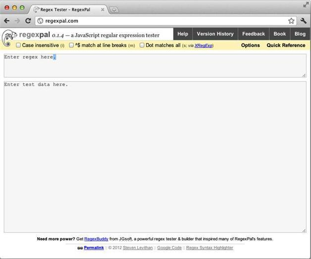

1.1 从Regexpal开始
首先介绍一下Regexpal网站（ http://www.regexpal.com）。在Google Chrome或者Mozilla Firefox之类的浏览器中打开该网站，可以看到如图1-1所示的网站页面。

图1-1 在谷歌Chrome浏览器中打开Regexpal网站
接近浏览器窗口的顶部有一个文本区，下方还有一个更大的文本区。顶部的文本区是用来输入正则表达式的，下方的文本区是用来输入目标文本的。目标文本即要从中匹配字符串的文本。
本书正文每一章的结尾都有一节 “技术备忘录”。这些备忘录提供与所在章节讨论的技术有关的额外信息，并告诉你到哪里可以找到更多的相关信息。这种方法既不会打断正文的节奏，又能为读者多提供一些扩展信息。